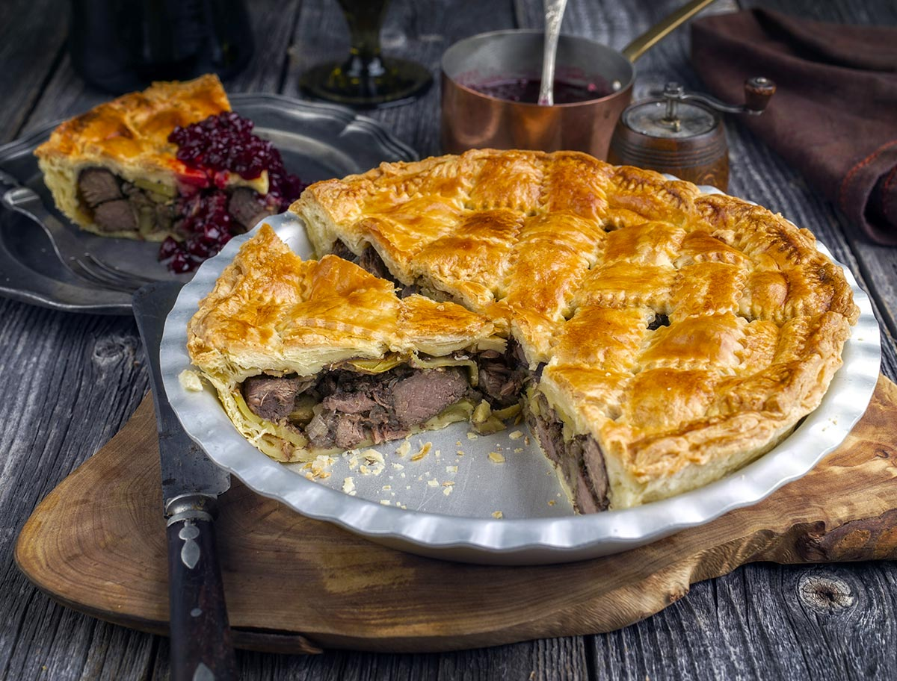

When it comes to pie, the crust will make or break your baked treat. This video demonstrates three simple tricks you can use to ensure that your pie dough bakes into the perfect balance of chewy and flaky.
- Use a perfect balance of butter and shortening (you may have to tweak things to fit your preference).
- Put one cup of your recipe’s flour to the side. Mix the butter and shortening with the remaining flour, then mix in the cup you set aside afterward.
- Use vodka instead of water to avoid tough, leathery crust.